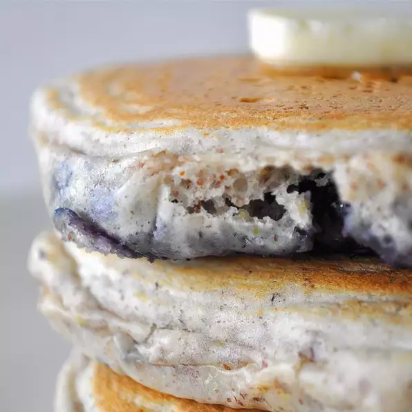

Blueberry Pancakes

Fluffy pancakes with ground flax seed and blueberries for a healthier, fiber filled pancake.
Ingredients:
- 1 1/2 cups dry pancake mix
- 1/2 cup flax seed meal
- 1 cup skim milk
- 2 eggs
- 1 cup fresh or thawed frozen blueberries
Steps:
1. Set a nonstick skillet over medium heat.
2. In a medium bowl, stir together the pancake mix and flax seed meal. In a seperate bowl or measuring cup, whisk together the milk and eggs. Pour the liquid into the dry ingredients, and stir just until moistened
3. Spoon 1/4 cupfuls of batter onto the hot skillet. Sprinkle with as many blueberries as desired. Cook until bubbles appear on the surface, then flip and cook until browned on the other side.